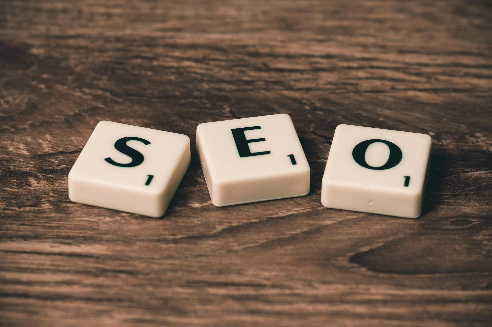

Jesteśmy zespołem, który pomaga firmom zaistnieć w sieci.
Zajmujemy się tworzeniem nowoczesnych stron internetowych, pozycjonowaniem (SEO) i prowadzeniem social mediów.
Wierzymy, że dobra obecność online to dziś podstawa sukcesu — dlatego nasze rozwiązania są zawsze dopasowane do potrzeb i celów klientów.
Tworzymy z pasją, analizujemy z precyzją i działamy tak, by Twoja marka była widoczna, zapamiętywana i skuteczna.
Kim jesteśmy?
Jesteśmy agencją digital, która skupia się na wynikach.
Pomagamy firmom zdobywać nowych klientów dzięki skutecznemu SEO, profesjonalnym stronom www i strategicznie prowadzonym social mediom.
Nasze działania łączą techniczne know-how, analitykę i kreatywność — tak, aby każda marka mogła rozwinąć skrzydła w internecie.
Co robimy?
SEO
Sprawimy, że Twoja strona będzie łatwiejsza do znalezienia w wyszukiwarce Google.
Zajmujemy się optymalizacją treści, struktury strony oraz technicznych aspektów SEO.
Dzięki temu Twoi potencjalni klienci szybciej Cię znajdą, a Ty zyskasz więcej ruchu i zapytań.

Tworzenie stron internetowych
Projektujemy i budujemy strony, które nie tylko dobrze wyglądają, ale też sprzedają.
Responsywne, szybkie, dopasowane do potrzeb — od prostych wizytówek po rozbudowane serwisy firmowe.
Zadbamy o każdy detal: od projektu graficznego po teksty i podstawową optymalizację SEO.
Utrzymanie i prowadzenie social media
Twoje media społecznościowe mogą być silnym narzędziem marketingowym — jeśli są prowadzone strategicznie.
Zajmujemy się tworzeniem spójnych treści, planowaniem publikacji i budowaniem relacji z odbiorcami.
Pomagamy markom budować zaangażowaną społeczność i zwiększać rozpoznawalność online.
Najnowsze artykuły
Dlaczego warto mieć stronę internetową?
W dzisiejszych czasach brak strony internetowej to jak nieistnienie w oczach klienta.
Nawet jeśli prowadzisz małą firmę lub lokalny biznes, własna strona to Twoja wizytówka w sieci — dostępna 24/7.
Dzięki niej:
budujesz wiarygodność i zaufanie,
możesz być odnajdywany w Google,
zyskujesz kontrolę nad wizerunkiem,
a Twoi klienci mają łatwy dostęp do informacji o Tobie.
Strona to nie wydatek — to inwestycja w rozwój.
Jeśli jeszcze jej nie masz, to najlepszy moment, żeby to zmienić.
Czytaj więcej